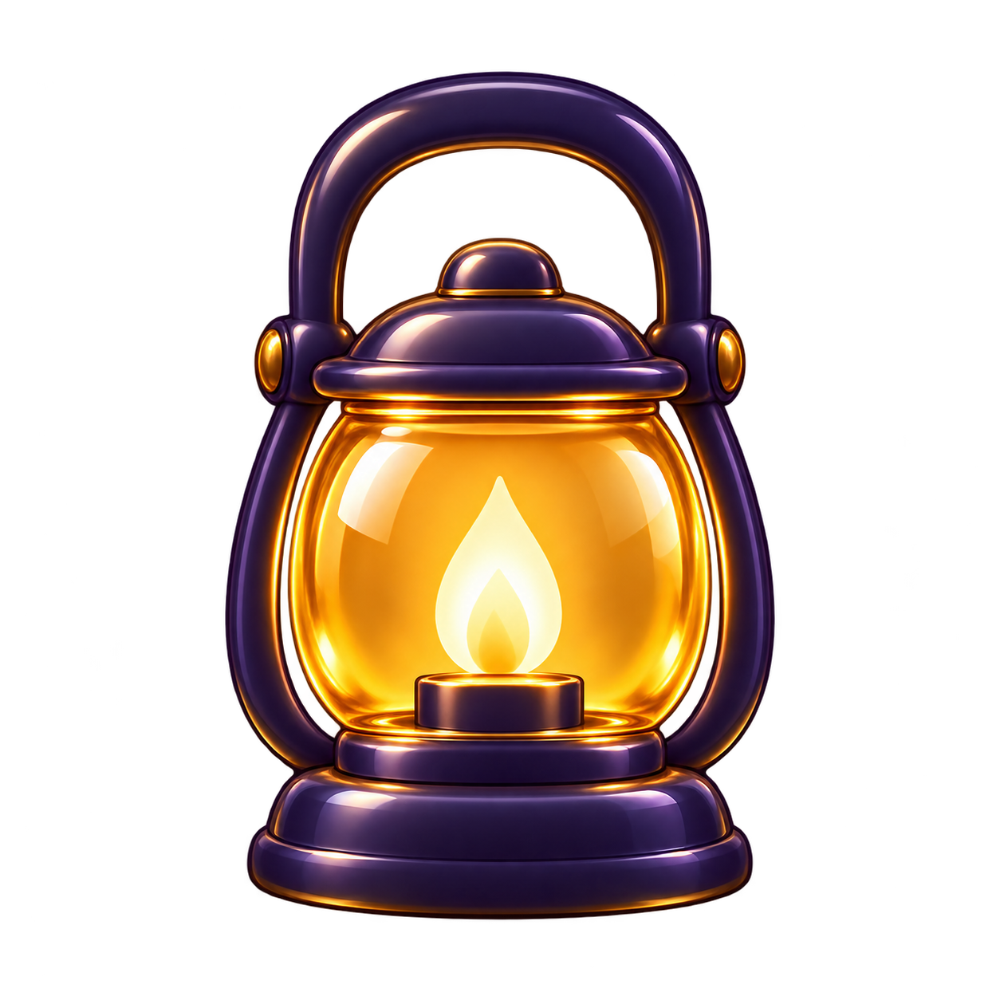
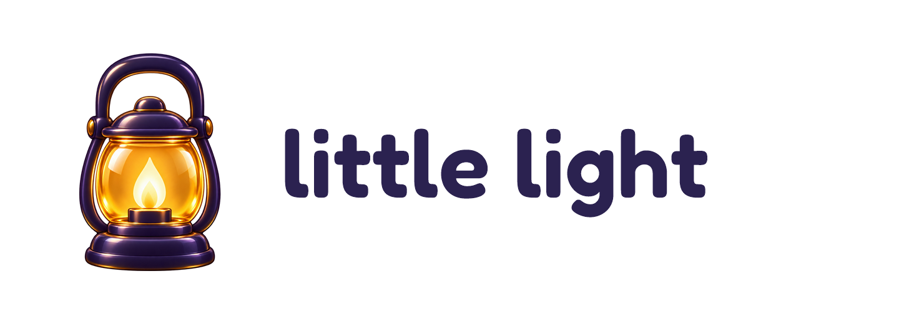
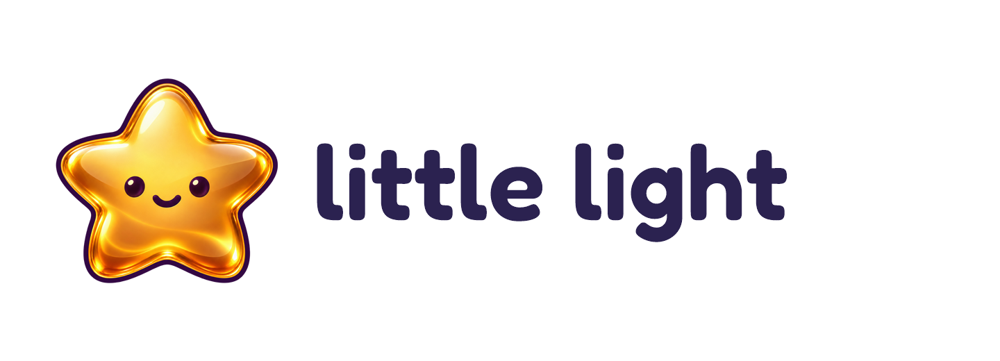

1. Little Lantern
A warm welcome and a clear connection to Pip’s lantern.

64 and 32 px canvas previews
Download logo PNGThree logo directions for children's Bible stories. Inspired by Selah’s warm amber and memorable silhouette, with softer shapes and clearer storytelling for ages 5–7.

A warm welcome and a clear connection to Pip’s lantern.

A story becomes a light—the clearest connection to reading and earning stars.
A friendly star that feels playful, encouraging, and easy to recognize.

Concept exploration, not a replacement of the live brand. Symbols generated with the built-in image tool; exact lettering composed in Fredoka SemiBold. Selah was used as a material and simplicity reference. The selected mark should receive a flat, small-size variant before final favicon use.